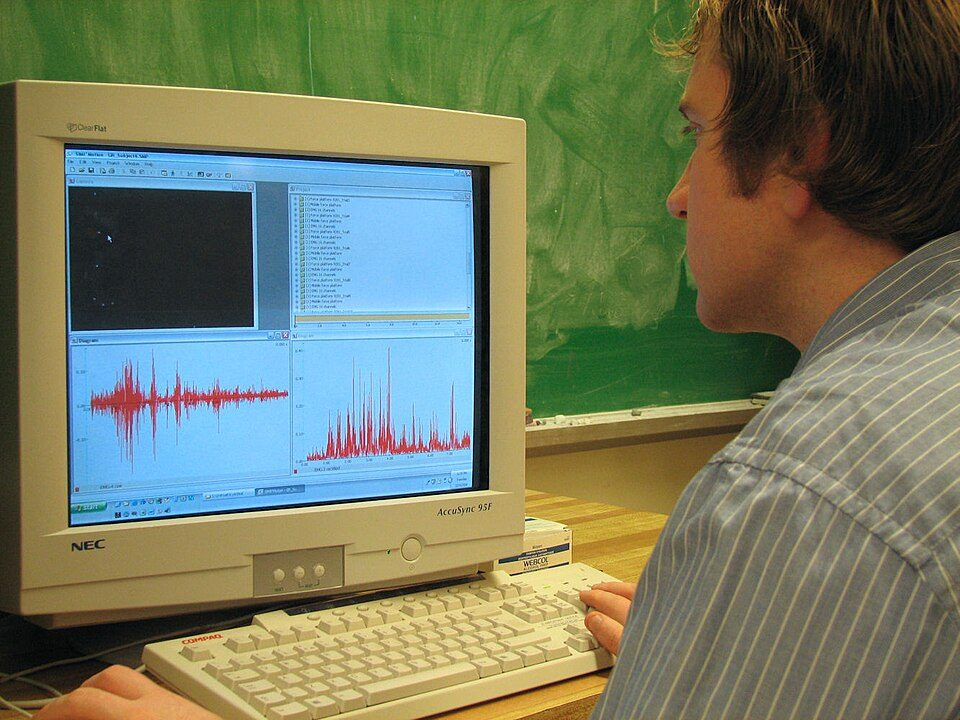

What they are
Electromyography (EMG) and nerve conduction studies (NCS) examine the peripheral nervous system: the nerves, the junction between nerve and muscle, and the muscles. They are usually done together by a clinical neurophysiologist. They are an extension of the neurological examination: they show whether weakness or tingling comes from the nerve, the muscle or the root, which nerves are affected and how severely.
The two parts
Nerve conduction
A nerve is stimulated with small electrical pulses on the skin and the response is recorded further along. The following are measured:
- Conduction velocity: reduced when myelin is damaged (demyelination).
- Response amplitude: reduced when axons are lost.
- Blocks at specific points, such as at the wrist in carpal tunnel syndrome.
Distinguishing between myelin and axon damage gives important clues about the cause and outlook.
Electromyography
A fine needle is inserted into several muscles and their activity is recorded at rest and during contraction. It detects:
- Denervation: the muscle has lost its nerve (fibrillations, fasciculations).
- A myopathic pattern: the problem is in the muscle itself.
- Reinnervation: the nerve is trying to recover.
Special tests
- Repetitive stimulation and single-fibre EMG: examine the neuromuscular junction, key in myasthenia gravis and Lambert-Eaton syndrome.
- Blink reflex, sympathetic skin response or small fibre studies.
What it is used for
| Disease | What it adds |
|---|---|
| Carpal tunnel syndrome | Confirms the compression and its severity before surgery |
| Peripheral neuropathy | Type (axonal or demyelinating) and extent |
| Guillain-Barré | Acute demyelinating pattern; outlook |
| ALS | Denervation in several regions, essential for diagnosis |
| Myasthenia gravis | Fatigue on repetitive stimulation |
| Dystrophies and myopathies | Myopathic pattern; choosing a muscle for biopsy |
| Radiculopathies (sciatica, cervical root pain) | Which root is affected and whether there is active damage |
| Facial palsy | Outlook for recovery |
How it is done
It takes 30 to 90 minutes. The pulses feel like an uncomfortable but tolerable jolt or tap, and the needle like a pinprick. It leaves no after-effects. It helps to:
- Have clean skin, with no creams, and warm hands and feet (cold slows conduction).
- Say if you take anticoagulants or have a pacemaker or defibrillator.
- There is no need to fast or stop medication, except myasthenia medicines if the doctor says so.
Limitations
It may be normal at first: in Guillain-Barré or a nerve injury, changes take days or weeks to appear. It also does not assess the small fibres (those for pain and temperature) well, which can fail in some painful neuropathies with a normal EMG; for these, a skin biopsy is used.
Sources
- Preston DC, Shapiro BE. Electromyography and Neuromuscular Disorders. 4th ed. Elsevier; 2020.
- Kimura J. Electrodiagnosis in Diseases of Nerve and Muscle. 4th ed. Oxford University Press; 2013.
- American Association of Neuromuscular & Electrodiagnostic Medicine. Patient resources: EMG and NCS.